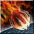
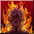
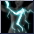
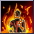
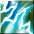
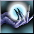
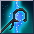
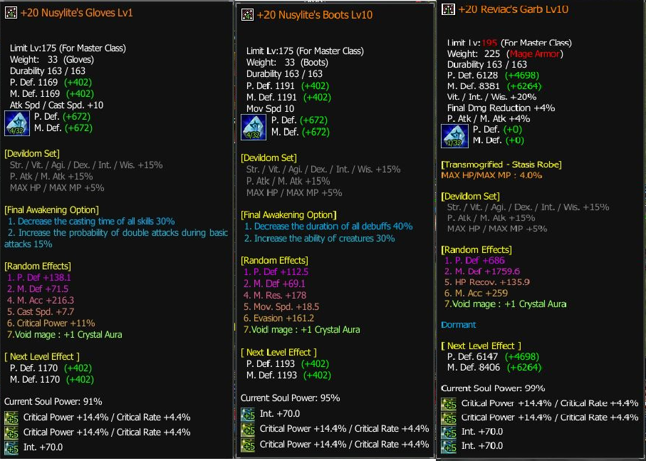

Void Mage
Tier SOverview
| Role | DPS |
| Difficulty | Hard |
| Strengths | A lot of control skills, high damage, shines late game |
| Weaknesses | Could be hard to master at the beginning |
| Why Play It | Cool animations, a lot of AOEs, this is your wizard-like class! |
Skills
Main Skills
Active:- Spammables:
- Chain Lightning
- Inferno Fire Arrow
- Maelstrom Bolt
- Fireball

- Flame Burn

- AoE Spells:
- Lightning Field

- Fire Field

- Fire Storm

- Lightning Field
- AoE Control Spells:
- Meteor Shower

- Abyssal Grip
- Heaven's Breaker
- Splash Thunder

- Meteor Shower
- Cooldown Resetter: Dark Spiral

- Healing Spell: Life Leech

- Self Buffs:
- Spirit of Fire
- Tempest
- Heed of the Conjuror

- Grim Attrition
- Defensive Buffs:
- Neutralize Magic

- Magic Skin
- Neutralize Magic
- Crystal Aura your main skill in gear
- Chrono Shift
Rotation
Single Target:- Use spammable spells above
The play style of VM seems complicated at first but it’s actually very easy to understand.
We make sure to cast all our self buffs then cast our Fields spells:
Lightning Field ,
Fire Field ,
Fire Storm
and then we hit them with Dark Spiral that will proc Chrono Shift passive and allows us to cast fields again.
So the rotation will look like this:
- Pull mobs → Fields → AoE Control Skill → Dark Spiral → reset skills → Fields again → AoE Control Skill → Dark Spiral = reset skills.
Sometimes you will not reset your fields with Dark Spiral or you cast Fields but Dark Spiral is not ready, in this scenario keep spamming Chain Lightning (image) until your spells are ready to be cast again.
Talent Build
| Points | Allocation |
|---|---|
| 5 TP | 0 | 3 | 2 |
| 6 TP | 1 | 3 | 2 |
| 7 TP | 2 | 3 | 2 |
Stats
| Priority | Stats |
|---|---|
| Damage | 100% critical rate, Critical Power (CP), Int → ordered by priority |
| Defense | Agility → more Agility means more HP and Evasion and more mana (stack with CA?) |
Accessories
| Setup | Accessories |
|---|---|
| Damage | Rings with 40+ INT / 20+ CP, the 3rd stat could be movement speed, Evasion, P.atk depends on what you need. |
Pets & Belt
| Slot | Recommendation |
|---|---|
| Belt pets |
Cheap setup: 3 White Dragons S1 or 3 Ethereal Pixies S2 + Mephisto/Lunacy/M.Hector card Normal setup: 3 Ethereal Pixies S2, 2 unicorns S5, Snowman |
| Summoned pet | Wind Pixie until 230+, then change to Ethereal Pixie |
Gear
Progression Path
- R2 helmet +20 (all skills +1)
- R6 +15 gear from hidden sanctuary
- Circus weapons and accessories from Circus dungeon
- Parallel World gear (either trash stats 2 slots with your main skill, or max slots in each gear but trash skill, depends on what you could find)
- Island of gods weapons and rings
- DD Accessories and Yushiva belt
- Lava gear (boots, gloves, armor, helmet)
- Medal
- Emblem
Optimization
You upgrade the above when it's applicable e.g., more slots in belt, +24 weapon, +24 medusa helmet, better stats on gear. You always prioritize stats like the following item:

Perfect Gear Example Perfect Staff Example
Perfect Staff Example
Example of purple stats you look for:
- Evasion and movement speed on boots | Evasion or CP on armor, Emblem, Medal
- M.accuracy on gloves, medal or emblem
| Stat Targets & Item Stat Info | |
|---|---|
| M.accuracy Target | |
| RoA | 1000+ M.accuracy |
| Hidden RoA | 1200+ M.accuracy |
| DD6 (level 180) | 1500+ M.accuracy |
| SF (level 200) | 2000+ M.accuracy |
| Item Stat Examples | |
| M.accuracy | ~200+ on gloves, emblem, or medal |
| Crit power | ~11+ on gloves, emblem, medal |
| Evasion | ~160+ on boots, armor, medal, or emblem |
| Movement Speed | ~17+ on boots, 30+ on rings |
| You can find the exact min/max stats on the Discord channel (to be imported here soon). | |
Titles
- Title for Reduced Damage: Camper
(Purchase a tent from Merchant in Hidden Village) - Titles from Underground Dungeons Stage 4:
Title Location Intelligence Wisdom Akt IV, Scene IV Presto Palmir Plateau +28 +23 Akt IV, Scene IV Vivace Palmir Plateau +23 +19 Akt IV, Scene IV Moderato Palmir Plateau +19 +16 Akt IV, Scene III Presto Crystal Valley +22 +18
Leveling Progression
Tips
- Honey water, mana scroll, and mana potions will be very useful early game.
- Make sure to always use Wind Pixie potion for better survivability.
- Always use Deep Evasion before pulling, it will reset thanks to Chrono Shift.
- Stack INT in all your gear, prioritize INT over m.atk in awakenings.
- Use Wind Pixie encouragement for a huge boost during boss fights.
- Some people look for items with evasion but also with perf.block (since we use Mage wall, this stat can help).
- At SF level, once you become able to solo buffalos, the 1h legendary staff 110 is used instead of your main weapon (same damage and less Freeze and durability problems).
Endgame
| Aspect | Rating |
|---|---|
| Performance | 9/10 |
| Solo Ability | 10/10 |